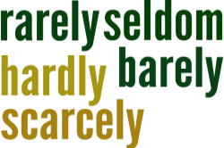

Negation and questioning in English: the essentials
 |
 |
English is no different from many languages in
having a number of ways to make negatives and ask questions. How
English does it is, however, not simple. Here are
some examples. In each column, there is one rogue which is not
a real question or a real negative. Can you spot it?
Click here when you have spotted it.
| Negatives | Questions |
|
|
Sentence 5 is not a real negative. Although
grammatically it looks negative, it is functionally a positive
statement (or even a request).
Sentence b. is also not a real question. It's
an offer.
Note that these are the only sentences in which the word some rather than any
comes before the noun. The
distinction between some and any is a good test of whether an
utterance is, in fact, a real negative or a question in its function.
The first thing to get clear is that what may look like
a question may be doing something other than asking a question and
what looks like a negative may not be negative at
all. On the other hand, what looks like a positive sentence
may actually be a question or a negative.
Here are some more examples:
Can I get you some tea?
looks like a question but is an offer.
Isn't that beautiful!
looks like a question but is an exclamation.
I reject any suggestion that I
was speaking to anyone
looks like a positive sentence but is actually negative
(note the use of any, anyone not some, someone).
Couldn't you just shut up!
looks like both a negative and a question but is
actually a strongly worded request.
The Rolls-Royce is yours?!
looks like a positive sentence but is actually a
question. Intonation is the clue, of course, represented by
the puctuation.
Form and function do not have a
one-to-one relationship (in any language).
 |
Making questions and negatives in EnglishThe grammar |
The way we make questions and negatives depends on the type of verb we are using. Essentially there are three that concern us here.
1. Lexical or main verbsHe works in London
|
Lexical or main verbs are in the majority. They are verbs
which describe states or actions and carry meaning even when they
are the only verb in the sentences. For example
He
smokes
carries a meaning but
He can
or
He was
do not carry any meaning and must be combined with
other words to make any sense.
English is unusual in the way it makes questions and negatives with these sorts of verbs because we use an operator, the verb do. The operator carries only the grammatical information and no meaning in itself. This is how it works:
| Person and tense | Positive sentence | Negative sentence | Questions |
| Present tense he she it |
He speaks Italian | He does not speak Italian | Does he speak Italian? |
| Doesn't he speak Italian? | |||
| She likes oysters | She doesn't like oysters | Does she like oysters? | |
| Doesn't she like oysters? | |||
| It makes a noise | It doesn't make a noise | Does it make a noise? | |
| Doesn't it make a noise? | |||
| Present tense (All other persons) |
I speak Italian | I don't speak Italian | Do you speak Italian? |
| Don't you speak Italian? | |||
| They enjoy gardening | The don't enjoy gardening | Do they enjoy gardening? | |
| Don't they enjoy gardening? | |||
| You live in the USA | You don't live in the USA | Do you live in the USA? | |
| Don't you live in the USA? | |||
| Past tense (All persons) |
She went shopping | She didn't go shopping | Did she go shopping? |
| They gave it up | They didn't give it up | Didn't she go shopping? |
A few notes:
- The only two tenses in the table are present simple and past simple. Other tense forms work differently, as we shall see.
- Here we have given the usual spoken forms of the operator with the contracted form of not (n't). This pattern will be followed in the whole of this guide.
- The functions of the negative questions are described below.
- The forms used with wh- words (how, what, when, where, why, who, whom, which, whose) have a separate guide to themselves and are not discussed here.
2. Auxiliary verbs |
Auxiliary verbs come in two types for our purposes here.
- Modal verbs
These verbs show the speaker's attitude in relation to likelihood, advisability, obligation, possibility and so on. The verbs have some special characteristics and how they form negatives and questions is one of them. For more detail, see the guide to modality. We are only concerned here with the form of questions and negatives. There are a lot of these verbs so these are examples only:Verb Positive sentence Negative sentence Questions Pure modal verbs He can speak Italian He can't speak Italian Can he speak Italian? Can't he speak Italian? She must leave now She mustn't leave now Must she leave now? Mustn't she leave now? It might make a noise It mightn't make a noise Might it make a noise? Mightn't it make a noise? Semi-modal verbs I need to speak Italian I don't need to speak Italian Do you need to speak Italian? Don't you need to speak Italian? I needn't speak Italian Need you speak Italian? Needn't you speak Italian? They used to enjoy gardening The didn't use(d) to enjoy gardening Did they used to enjoy gardening? Didn't they used to enjoy gardening? They usedn't to enjoy gardening Used they to enjoy gardening? Usedn't they to enjoy gardening? - Primary auxiliary verbs
There are four of these and there is a separate guide to their characteristics on this site. For the purposes of this guide we will focus on only two: be and have. These verbs alter the tense and aspect of main verbs or they change the voice. Examples only, again:Function Positive sentence Negative sentence Questions Changing tense and aspect He has learned Italian He hasn't learned Italian Has he learned Italian? Hasn't he learned Italian? She is learning Italian She isn't learning Italian Is she learning Italian? Isn't she learning Italian? She will be gardening She won't be gardening Will she be gardening? Won't she be gardening? She has been gardening She hasn't been gardening Has she been gardening? Hasn't she been gardening? Changing voice It was repaired It wasn't repaired Was it repaired? Wasn't it repaired? Changing tense, aspect and voice It is being repaired It isn't being repaired Is it being repaired? Isn't it being repaired? It had been repaired It hadn't been repaired Had it been repaired? Hadn't it been repaired?
Notes:
- Pure modal verbs and the auxiliaries have and be make their negatives by the insertion of not or n't after the verb.
- Pure modal verbs and the auxiliaries have and be make their questions by reversing the verb and the subject order.
- Semi-modal verbs exhibit both kinds of question and negative structures.
 |
3. be and have as main verbs |
Both these verbs can also appear as main rather than auxiliary
verbs. When they do so, they keep some of their auxiliary
characteristics but they also take on new ones.
For
example:
| Function | Positive sentence | Negative sentence | Questions |
| Main verb meaning 'exist' | He is in London | He isn't in London | Is he in London? |
| He's not in London | Isn't he in London? | ||
| I am in London | I'm not in London | Am I in London? | |
| Aren't I in London? | |||
| Am I not in London? | |||
| They are very irritating | They aren't very irritating | Are they very irritating? | |
| They're not very irritating | Aren't they very irritating? | ||
| Main verb meaning 'possess' | It has two parts | It hasn't (got) two parts | Has it (got) two parts |
| It's not got two parts | Hasn't it (got) two parts? | ||
| It doesn't have two parts | Does it have two parts? | ||
| Doesn't it have two parts | |||
| He has a house in Paris | He hasn't (got) a house in Paris | Has he (got) a house in Paris? | |
| He's not got a house in Paris | Hasn't he (got) a house in Paris? | ||
| He doesn't have a house in Paris | Does he have a house in Paris? | ||
| Doesn't he have a house in Paris? |
Notes:
- When have acts as a main verb, there are three
possible negative and question forms:
- Inserting not or n't for a negative and reversing the order for a question
- Inserting not or n't for a negative and reversing the order for a question and also adding the meaningless got to the clause. This is more common in British English.
- Following the patterns of a main verb and using the
do / does / did operator. This is more common in
American English but becoming so in British English, too.
The added complication is that when the verb means be obliged to, it usually takes the negation and question as a main verb but, of course, the meaning alters.
I have to go = I must go
Do I have to go? = Must I go?
BUT:
I don't have to go = I needn't go
- The verb be retains its structures whether it is a
main or auxiliary verb but it is very
irregular:
- It does not make the first-person question with the
am form. In colloquial English, it uses are
instead, as in, e.g.:
Aren't I clever?
but that must be in the contracted form and is never
*Are not I? - In formal English the question may be Am I not ...? but that cannot be contracted to *amn't.
- It never uses the do / does / did operator.
- It does not make the first-person question with the
am form. In colloquial English, it uses are
instead, as in, e.g.:
- With both be and have, a colloquial
negative alternative with the contraction of the verb rather
than not is heard. For example:
instead of
He isn't in London
we can say
He's not in London
and instead of
They haven't got the right answer
we can say
They've not got the right answer - With this form of have, the use of got is
obligatory.
It is not possible to say
*They've not the right answer - There is no alternative form for the first-person singular.
We can only have
I'm not coming
or
I am not coming
because
*I amn't coming
is not available
This is quite a complicated set of patterns for learners to acquire, isn't it?
 |
adverbs, pronouns and determiners |
These three words classes have two forms of negation and a question form. They work like this but the list is not complete:
| Positive | Negative form 1 | Negative form 2 | Question form | |
| Adverbs | It is †somewhat warmer | It isn't any warmer | It is no warmer | Is it any warmer? |
| He is still waiting | He isn't waiting any more / longer | He is waiting no more / longer | Is he still waiting? | |
| They are there already | They aren't there yet | NO FORM | Are they there yet? | |
| She *sometimes arrives on time | She doesn't ever arrive on time | She never arrives on time | Does she ever arrive on time? | |
| It is somewhere in the garage | It isn't anywhere in the garage | It's nowhere in the garage | Is it anywhere in the garage? | |
| Pronouns | I'll complain to someone / somebody | I won't complain to anyone / anybody | I'll complain to no-one / nobody | Will you complain to anyone? |
| I bought some | I didn't buy any | I bought none | Did you buy any? | |
| Determiner | She wants some tea | She doesn't want any tea | She wants no tea | Does she want any tea? |
† and other downtoners such as slightly, marginally, a bit, a tad etc.
|  |
These five adverbs are sometimes known as negators because they
operate in the same way as the negator never.
For example:
Used with Negative forms 1 (see table above)
I seldom went anywhere
I barely saw anything
I hardly had any time to think
She scarcely ever comes late
They rarely come to anyone's party
 |
Negative questions |
Negative question forms have a range of functions, many signalled by intonation.
- To express the negative orientation of the speaker:
Does nobody love me? [I assume nobody loves me]
Can't you get here any earlier? [I assume you can't but I'm hoping you can]
Won't you reconsider? [I assume you won't] - To express surprise:
Isn't it too cold to go swimming? [I assumed it was]
Aren't you too old for this? [I assumed you were]
Hasn't he left yet? [I assumed he had]
- To express disappointment:
Shouldn't you be in bed? [I am disappointed that you are not]
Can't you help a bit? [I am disappointed that you are not helping]
 |
Transferred negation |
English has a peculiarity with negation which causes a good deal
of difficulty. Most languages will put the negation where it
belongs, i.e., with the verb that is being negated.
For example:
I think that he hasn't done it yet
I expect he won't come
I imagine she has no money
etc.
In all these cases, we have a verb signalling belief followed by a
clause which is negated in some way.
English, bizarrely, often chooses to negate the first clause and
leave the second clause positive. This is why it is
called transferred negation. It only occurs with verbs
signalling belief or assumption including, but not limited to
believe, suppose, guess, fancy,
imagine, reckon, expect
For the three sentences above, for example, English speakers would
naturally select:
I don't think he's done it yet
I don't expect he will come
I don't imagine she has any money
This is deeply illogical and confusing because the negation
really belongs with the second, not the first, clause. The
proof of this is to consider the natural question tag because the
positive question tag reveals the negative meaning of the clause:
I don't suppose he is coming now, is he?
I don't reckon we'll be there before 8, will we?
For more on question tags,
see that guide.
 |
Problems for learners |
The way that English operates in this area is clearly quite
complicated and learners at all levels make errors. Here are
some examples. Think about what the source of the error could
be and then click on the
 to reveal some comments.
to reveal some comments.
| I don't
can come |
The problem exemplified here is that the learner has
acquired the difficult and unusual way English makes
questions with main verbs, using do / does /did.
Unfortunately, learners often carry this over to modal verbs which do not use the form. |
| Go you
out? |
Many language make all or most question forms by
simply reversing the subject and the object.
English does this for modal verbs and auxiliaries as we
have seen but it uses the odd and non-intuitive do
/ does / did form for main verbs.
|
| You go
out? |
Many languages do not have a separate structure for
question forms at all and rely on intonation in spoken
language and punctuation in written language.
English can do this as we saw above with the example, Coming?, but it is quite rare and very informal. |
| I don't
have some money |
The way that English uses determiners and pronouns
like some and any is unique to the
language and the system, as we saw above, is
complicated.
All languages differ in this respect. |
| I think he
hasn't done it already |
There are two issues here:
The first is that a more natural statement in English would be to transfer the negation to the first clause and say I don't think ... . Very few language work like English in this respect. The second problem is with the adverb already. In questions and negatives in English, the adverb usually changes to yet. The correct statement should be: I don't think he has done it yet. |
| Does he
have got the book? |
The insertion of the wholly meaningless verb
got in British English in particular causes problems
because it cannot be used with the do operator.
There is a good argument for confining the teaching of the question and negative forms of have as a main verb to the use of the do operator. |
| He doesn't
have been |
A learner may well be forgiven for assuming that the
verb have always works the same way but its
existence as both a main verb and an auxiliary verb is
confusing.
|
| It hasn't
was fixed yet |
Not knowing how to build tense and aspect forms in
English when both the auxiliary be and
have are used is quite common. It requires
careful teaching and practice.
|
| I seldom
don't have some |
There are two issues here, too:
The first is that seldom is a negator in English and following it with a negative with don't makes a double negative in English. While that is permissible in many languages, English does not usually allow it. The second problem is with the pronoun some. In questions and negatives in English, the pronoun usually changes to any. The correct statement should be: I seldom have any. |
| He denies
doing something They failed to be here already |
The issue here is to with the meaning of the verb.
A number of verbs in English are negative in their sense
so the form of the adverb or the pronoun is also
negative.
These include verbs such as deny, negate, repudiate, reject, scrap, fail, discard, avoid, escape, duck, regret, dislike, abhor etc. which all carry a negative meaning. For example: He denied any wrongdoing [not *He denied some wrongdoing] The have failed to be here yet [not *They have failed to be here already] She avoided speaking to anyone [not *She avoided speaking to someone]. |
 |
Teaching |
All these problems need careful handling. The central issues are:
- Do not underestimate how complex this area is
- Do not assume that other languages have similar forms and structures. They do not.
- Do not overload learners. Teach the structures in
isolation before trying to combine them.
There is little point, for example, in trying to teach the changes to pronouns, adverbs and determiners all at once and none at all until the basic negative and question structures have been acquired.
| Related guides | |
| negation | this is a more technical guide covering some peculiarities of the negative and learner difficulties with it |
| question tags | for a guide to other ways of making questions |
| interrogatives | this is a more technical guide covering the form of interrogatives in English |
| primary auxiliary verbs | a guide to a troublesome area |
| modality essentials | the essential guide to modal auxiliary verbs |
| wh-questions | find out here about how to form questions with what, who, how, why etc. |